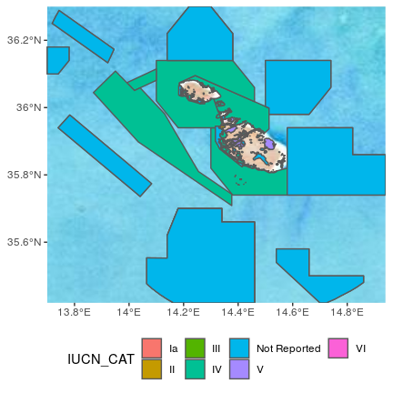

wdpar: Interface to the World Database on Protected Areas


Overview
Protected Planet provides the most comprehensive data for conservation areas worldwide. Specifically, it provides the World Database on Protected Areas (WDPA) and the World Database on Other Effective Area-Based Conservation Measures (WDOECM). These databases are used to monitor the performance of existing protected areas, and identify priority areas for future conservation efforts. Additionally, these databases receive monthly updates from government agencies and non-governmental organizations. However, they are associated with several issues that need to be addressed prior to analysis and the dynamic nature of these databases means that the entire data cleaning process needs to be repeated after obtaining a new version.
The wdpar R package provides an interface to data provided by Protected Planet. Specifically, the package can automatically obtain data from the World Database on Protected Areas (WDPA) and the World Database on Other Effective Area-Based Conservation Measures (WDOECM). It also provides methods for cleaning data from these databases following best practices (outlined in Butchart et al. 2015; Protected Planet 2021; Runge et al. 2015). The main functions are wdpa_fetch() for downloading data and wdpa_clean() for cleaning data. For more information, please see the package vignette.
Installation
Package installation
The latest official version of the wdpar R package can be installed using the following R code. Please note that this package requires the curl and sf R packages which may require additional software to be installed. If you encounter problems installing the wdpar R package, please consult the installation instructions for these packages.
install.packages("wdpar", repos = "https://cran.rstudio.com/")Alternatively, the latest developmental version can be installed using the following R code. Please note that while developmental versions may contain additional features not present in the official version, they may also contain coding errors.
if (!require(remotes)) install.packages("remotes")
remotes::install_github("prioritizr/wdpar")Additional dependencies
The wdpar R package can leverage the prepr R package to augment data cleaning procedures. Since the prepr R package is not available on the Comprehensive R Archive Network, it is listed as an optional dependency. In some cases, the prepr R package is required to complete the data cleaning procedures (e.g. to fix especially extreme geometry issues) and the wdpar R package will throw an error if the package is not available. To install the prepr R package, please use the following R code.
if (!require(remotes)) install.packages("remotes")
remotes::install_github("prioritizr/prepr")Note that the prepr R package has system dependencies that need to be installed before the package itself can be installed (see below for platform-specific instructions).
Windows
A Chromium-based web browser to be installed (e.g., Google Chrome, Chromium, Brave). Also, the Rtools software needs to be installed to install the prepr R package package from source. This software provides system requirements from rwinlib.
Ubuntu
A Chromium-based web browser must to be installed (e.g., Google Chrome, Chromium, Brave). Also, the gmp, mpfr, and several spatial libraries need to be installed. For recent versions of Ubuntu (18.04 and later), these libraries are available through official repositories. They can be installed using the following system commands:
Linux
For Unix-alikes, a Chromium-based web browser (e.g., Google Chrome, Chromium, Brave), gmp (>= 4.2.3), mpfr (>= 3.0.0), and gdal (>= 3.2.2) are required.
macOS
A Chromium-based web browser to be installed (e.g., Google Chrome, Chromium, Brave). Also, the gmp, mpfr, and gdal libraries are required. The easiest way to install these libraries is using HomeBrew. After installing HomeBrew, these libraries can be installed using the following commands in the system terminal:
Usage
Here we will provide a short introduction to the wdpar R package. First, we will load the wdpar R package. We will also load the dplyr and ggmap R packages to help explore the data.
Now we will download protected area data for Malta from Protected Planet. We can achieve this by specifying Malta’s country name (i.e. "Malta") or Malta’s ISO3 code (i.e. "MLT"). Since data are downloaded to a temporary directory by default, we will specify that the data should be downloaded to a persistent directory. This means that R won’t have to re-download the same dataset every time we restart our R session, and R can simply re-load previously downloaded datasets as needed.
# download protected area data for Malta
mlt_raw_pa_data <- wdpa_fetch("Malta", wait = TRUE,
download_dir = rappdirs::user_data_dir("wdpar"))Next, we will clean the data set. Briefly, the cleaning steps include: excluding protected areas that are not yet implemented, excluding protected areas with limited conservation value, replacing missing data codes (e.g. "0") with missing data values (i.e. NA), replacing protected areas represented as points with circular protected areas that correspond to their reported extent, repairing any topological issues with the geometries, and erasing overlapping areas. For more information, see ?wdpa_clean.
# clean Malta data
mlt_pa_data <- wdpa_clean(mlt_raw_pa_data)Print preview of the data associated with each protected area.
# print preview
head(mlt_pa_data)## Simple feature collection with 6 features and 32 fields
## Geometry type: MULTIPOLYGON
## Dimension: XY
## Bounding box: xmin: 1382584 ymin: 4280853 xmax: 1394227 ymax: 4299615
## Projected CRS: +proj=cea +lon_0=0 +lat_ts=30 +x_0=0 +y_0=0 +datum=WGS84 +ellps=WGS84 +units=m +no_defs
## Precision: 1500
## # A tibble: 6 × 33
## WDPAID WDPA_PID PA_DEF NAME ORIG_NAME DESIG DESIG_ENG DESIG_TYPE IUCN_CAT
## <dbl> <chr> <chr> <chr> <chr> <chr> <chr> <chr> <chr>
## 1 194425 194425 PA Il-G… Il-Gżejj… Rise… Nature R… National Ia
## 2 194420 194420 PA Filf… Filfla Rise… Nature R… National Ia
## 3 555700375 555700375 PA Il-P… Il-Ponta… Rise… Nature R… National Ia
## 4 555588631 555588631 PA Il-M… Il-Majji… Park… National… National II
## 5 194418 194418 PA Il-B… Il-Ballu… List… List of … National III
## 6 194415 194415 PA Il-Ġ… Il-Ġonna… List… List of … National III
## # ℹ 24 more variables: INT_CRIT <chr>, MARINE <chr>, REP_M_AREA <dbl>,
## # GIS_M_AREA <dbl>, REP_AREA <dbl>, GIS_AREA <dbl>, NO_TAKE <chr>,
## # NO_TK_AREA <dbl>, STATUS <chr>, STATUS_YR <dbl>, GOV_TYPE <chr>,
## # OWN_TYPE <chr>, MANG_AUTH <chr>, MANG_PLAN <chr>, VERIF <chr>,
## # METADATAID <int>, SUB_LOC <chr>, PARENT_ISO <chr>, ISO3 <chr>,
## # SUPP_INFO <chr>, CONS_OBJ <chr>, GEOMETRY_TYPE <chr>, AREA_KM2 <dbl>,
## # geometry <MULTIPOLYGON [m]>Finally, after cleaning the data, let’s plot a map showing Malta’s protected areas and color each area according to its management category (as defined by the The International Union for Conservation of Nature).
# reproject data to longitude/latitude for plotting
mlt_pa_data <- st_transform(mlt_pa_data, 4326)
# download basemap imagery
bg <- get_stadiamap(
unname(st_bbox(mlt_pa_data)), zoom = 8,
maptype = "stamen_terrain_background", force = TRUE
)
# make map
ggmap(bg) +
geom_sf(aes(fill = IUCN_CAT), data = mlt_pa_data, inherit.aes = FALSE) +
theme(axis.title = element_blank(), legend.position = "bottom")
If you need to calculate protected area coverage statistics for a country, please note that you will need to manually clip the cleaned protected area data to the countries’ coastline and its Exclusive Economic Zone (EEZ) to obtain accurate results (see official data cleaning guidelines). This step is not performed by the wdpar R package because there is no single “best” coastline and Exclusive Economic Zone (EEZ) dataset, since the “best” dataset for any given project depends on the level of required precision and available computational resources. For more examples—including an example of clipping the cleaned data to a coastline—please refer to the package vignette.
Citation
Please cite the wdpar R package and the relevant databases used in publications.
To cite the package, please use:
Hanson JO (2022) wdpar: Interface to the World Database on Protected Areas. Journal of Open Source Software, 7: 4594. Available at https://doi.org/10.21105/joss.04594.
To cite the World Database on Protected Areas (WDPA), please use:
UNEP-WCMC and IUCN ([insert year of the version downloaded]) Protected Planet: The World Database on Protected Areas (WDPA), [insert month/year of the version downloaded], Cambridge, UK: UNEP-WCMC and IUCN. Available at: www.protectedplanet.net.
To cite the World Database on Other Effective Area-Based Conservation Measures (WDOECM), please use:
UNEP-WCMC and IUCN ([insert year of the version downloaded]) Protected Planet: The world database on other effective area-based conservation measures, [insert month/year of the version downloaded], Cambridge, UK: UNEP-WCMC and IUCN. Available at: www.protectedplanet.net.